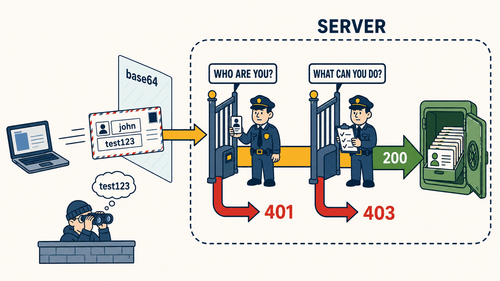

El punto de partida
01 Una pregunta, tres respuestas
Tienes una API. Alguien le habla. Y hay una pregunta que hay que resolver antes que ninguna otra:
¿Cómo le demuestras a un servidor que eres tú?
Parece una pregunta pequeña y no lo es. Todo el tema son tres respuestas distintas a esa misma pregunta, y cada una nace de un defecto de la anterior. No son tres tecnologías que compiten: son tres escalones, y hay que subirlos en orden para que el tercero tenga sentido.
Antes de seguir, una distinción que se confunde constantemente y que conviene tener clara desde ya. Son dos preguntas, no una:
| La pregunta | Se llama | Ejemplo |
|---|---|---|
| ¿Quién eres? | Autenticación | “Soy john, y esta es mi contraseña.” |
| ¿Qué puedes hacer? | Autorización | “john puede leer, pero no borrar.” |
Guarda esto, porque es la moraleja del tema entero y la vas a comprobar tú mismo al final: de las dos, solo la primera cambia tres veces. La segunda se queda igual en los tres escalones.
Escalón uno
02 Gritar la contraseña cada vez
La respuesta más directa: cada vez que pides algo, mandas tu usuario y tu contraseña junto con la petición. El servidor las comprueba y te deja pasar. Simple, funciona, y se usa desde 1996.

Fíjate en tres cosas del dibujo, en este orden.
La postal va abierta. Eso no es una licencia del ilustrador: es literal. Lo que viaja no está cifrado, va empaquetado en un formato que cualquiera revierte en un segundo. El del arbusto no está descifrando nada — está leyendo.
Hay dos puertas, no una. La primera pregunta quién eres; la segunda, si te toca. Son controles independientes, y por eso hay dos formas distintas de que te echen: porque no sabe quién eres, o porque lo sabe perfectamente y aun así no. Ese par vuelve en los tres escalones.
Todo eso pasa dentro del servidor, antes de que tu código se entere. El programa que devuelve los empleados no sabe que existe la seguridad.
El defecto que arrastra: la prueba de que eres tú es tu contraseña. Y viaja entera, en cada petición, mil veces al día. No caduca, no se puede anular, y no puedes darle a nadie un permiso recortado — o le das la contraseña completa, o no le das nada.
Escalón dos
03 Cambiarla por un pase
Si el problema es que la contraseña viaja siempre, la solución es que viaje una sola vez. La entregas al principio y te la cambian por otra cosa: un pase.
![Dos bandas. Arriba, rotulada ONCE: alguien entrega una contraseña en la ventanilla de una taquilla; la tarjeta se queda dentro y el empleado consulta un archivador; de la taquilla sale un pase con un nombre, un rol, un reloj y un sello de cera. Abajo, rotulada EVERY REQUEST: la misma persona cruza tres torniquetes seguidos enseñando solo el pase, y al final el archivador aparece cerrado con cadena. Aparte, un encapuchado lee el contenido del pase, y su copia falsificada con el sello de cera partido es rechazada.](img/fig-02-jwt-flujo.png)
Arriba y abajo son momentos distintos en el tiempo, no dos caminos. Arriba ocurre una vez al día; abajo, cada vez que haces algo.
El pase lleva escrito quién eres, qué puedes hacer y hasta qué hora vale. Y lleva un sello de cera. El sello de cera no esconde el contenido — mira al encapuchado: lee el pase perfectamente. Lo que hace el sello de cera es delatar si alguien lo ha tocado. Su copia falsa tiene el sello de cera partido, y por eso rebota.
Esa distinción es la que más cuesta y la que más rinde: el pase es de lectura pública y de escritura imposible. Cualquiera lo lee; nadie puede fabricar uno.
Y hay un detalle silencioso en el dibujo que vale mucho: el archivador está encadenado. Una vez emitido el pase, nadie vuelve a consultar la lista. La puerta decide sola. Por eso esto escala.
El defecto que arrastra: ese archivador encadenado es también la debilidad. Si despides a alguien, su pase sigue funcionando hasta que caduque, porque nadie va a preguntar. Y algo más incómodo: la taquilla es tuya, o sea que sigues siendo tú quien guarda las contraseñas de todo el mundo.
Escalón tres
04 Que la guarde otro
Empecemos por algo que ya has hecho cien veces. Entras a una web nueva y en vez de inventarte otra contraseña pulsas “Continuar con Google”. Se abre una pantalla de Google, escribes ahí tu contraseña, y vuelves a la web original ya identificado.
Piensa un segundo en lo que acaba de pasar: esa web nunca vio tu contraseña de Google. Y sin embargo sabe quién eres. Eso es este tercer escalón, y lo llevas usando años.
Los dos anteriores mejoraban cómo viaja la prueba. Este cambia quién la emite.
![Dos edificios separados. El de la izquierda es una recepción de hotel donde alguien entrega su contraseña por el mostrador; la contraseña se queda dentro y detrás de la recepcionista hay una estantería llena de fichas de personas. De la recepción sale una tarjeta llave con un nombre, un rol y un sello. El de la derecha es una habitación: la persona acerca la tarjeta a un lector, que la compara con un tablón público que muestra ese mismo sello. Detrás de la puerta solo hay una caja fuerte con fichas de empleados, ninguna estantería de personas. Aparte, una tarjeta de otro hotel es rechazada.](img/fig-03-oauth2-flujo.png)
Cuenta las estanterías. A la izquierda hay un mueble entero lleno de fichas de personas. A la derecha no hay ninguna: solo una caja fuerte con datos de trabajo. Esa asimetría es todo el escalón.
Tu aplicación deja de saber contraseñas. No es que las guarde mejor: no las tiene. Si mañana te la comprometen, no hay credenciales que filtrar, porque no había.
Una llave, muchas puertas
Y aquí aparece la ventaja que justifica todo el montaje. En un hotel no te dan una llave por habitación, por el gimnasio y otra por la piscina: te dan una, y todas las puertas se fían de la misma recepción.
Traducido: si tienes cinco aplicaciones y las cinco apuntan al mismo emisor, el usuario entra una vez y las cinco lo reconocen. No hay cinco registros de usuarios que mantener, ni cinco formularios de “olvidé mi contraseña”, ni cinco sitios donde se pueda filtrar. Eso es lo que la gente llama inicio de sesión único.
Prestar la llave sin prestar tu identidad
Hay un segundo uso, y es el problema para el que se inventó todo esto. Imagina que una aplicación de fotos quiere leer tus archivos de la nube. Con los escalones anteriores solo tenías una opción: darle tu contraseña. Y con ella podría leer, borrar y cambiarte la clave.
Con este esquema le das una tarjeta acotada: sirve solo para leer fotos, caduca, y la puedes anular cuando quieras — sin que esa aplicación haya sabido nunca tu contraseña. Es la diferencia entre prestarle a alguien la llave de tu casa o abrirle solo el buzón.
¿Y cómo confía la puerta en una tarjeta que no ha emitido? Por el tablón de la pared. El emisor publica su sello a la vista de todos, y la puerta compara. No necesita llamar a recepción, ni preguntar nada: el sello o cuadra o no cuadra.
Mira ahora la tarjeta rechazada de la esquina. Tiene el mismo rol que la buena. No la rechazan por falta de permisos: la rechazan porque la emitió otro hotel. Ahí está la idea con la que cierra el tema — la confianza no está en el papel, está en quién lo firmó.
Lo que cuesta: una pieza más de infraestructura que hay que levantar y mantener, y un punto único de fallo — si se cae recepción, no entra nadie a ninguna parte. Esto no es “la versión buena”: es la que resuelve el problema de varias aplicaciones a la vez.
La foto completa
05 Las tres, una al lado de la otra
| Gritar la contraseña | Cambiarla por un pase | Que la guarde otro | |
|---|---|---|---|
| Qué viaja | tu contraseña, siempre | un pase que emites tú | un pase que emite un tercero |
| Cuántas veces viaja la contraseña | en cada petición | una vez al día | nunca llega a tu aplicación |
| ¿Caduca? | no | sí | sí, y además se puede anular |
| ¿Quién guarda las contraseñas? | tú | tú | el tercero |
| Se consulta la lista de usuarios | en cada petición | solo al emitir el pase | ni eso |
| Un solo acceso para varias apps | no | no | sí |
| Dar acceso parcial a un tercero | imposible sin dar la contraseña | imposible sin dar la contraseña | sí, acotado y revocable |
| Cuándo elegirlo | algo interno y pequeño, siempre con HTTPS | una aplicación con su propio frontend | varias aplicaciones, o usuarios de fuera |
Ninguna de las tres sustituye a la anterior. Es la trampa habitual al aprender esto: creer que la tercera es la buena y las otras dos son antiguas. Para una API interna con cinco usuarios, el primer escalón con HTTPS es una respuesta perfectamente profesional. El tercero, ahí, sería montar un aeropuerto para cruzar la calle.
El premio
06 Cómo se llaman de verdad
Has llegado hasta aquí sin una sola palabra técnica. Aquí están:
| Lo que entendiste | Su nombre | Su guía |
|---|---|---|
| Gritar la contraseña cada vez | HTTP Basic | Guía 01 |
| Cambiarla por un pase sellado | JWT | Guía 02 |
| Que la guarde un tercero | OAuth2 y OIDC | Guía 03 |
Y tres palabras más que vas a ver enseguida y que ya sabes lo que significan, aunque nadie te las haya dicho todavía:
- Token — el pase.
- Firma — el sello de cera.
- Claim — cada cosa que va escrita en el pase: tu nombre, tu rol, la hora de caducidad.
Y ahora la comprobación que promete la sección 01. Cuando termines las tres guías, abre los tres archivos SecurityConfig.java uno al lado del otro. Vas a encontrar tres formas distintas de responder “¿quién eres?”… y exactamente la misma respuesta, línea por línea, a “¿qué puedes hacer?”.
Siguiente parada: guía 01 — HTTP Basic. Empieza con un comando que borra un empleado sin pedir permiso a nadie.